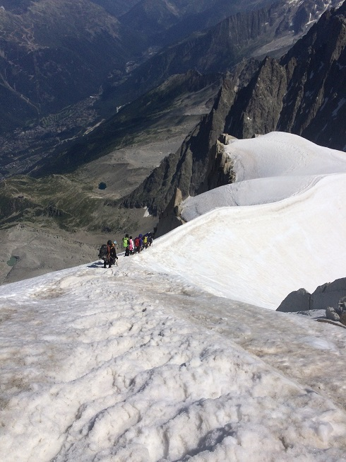

[转寄/推荐][转贴][删除][修改][设置可RE属性][上一篇][返回讨论区][下一篇][回文章][同主题列表][同主题阅读][从这里展开]
发信人: zzmax (zzmaxu), 信区: outdoor
标 题: 记登勃朗(1)
发信站: 饮水思源 (2015年08月11日06:29:19 星期二)
来法两年，很庆幸自己没有丢掉登山。
出国前在野协有一帮哥们，干什么都能找到伴。出来后，大多数是自己孤身一人。想到什么就去做。所幸想到的都是健身，跑步，攀岩，登山。
勃朗峰是西欧第一高峰，海拔4812米，是阿尔卑斯山脉的主峰，位于法、瑞、意边境。法语名字叫Mont-blanc,字面意为白色山脉。在普通法国人眼里，这已经是他们心里海拔很高的存在。所以当同事知道我成功登顶勃朗之后，我得到了他们的赞许。这对我这个外国人来说也算是一种莫大的认可。能改变他们对中国人的印象，让我挺高兴。
其实在14年9月底，我也曾经尝试攀爬勃朗峰。但由于时间太晚，错过了登山季(每年七八月最适合攀登勃朗峰)，山上天气非常不稳定。遇上暴风雪，最后在距离峰顶只差海拔400米的地方，全员下撤。当天无人登顶。
于是准备今年重来，尝试第二次攀登。准备工作第二次做已经轻车熟路：在山脚的镇上租借冰爪、冰镐、头盔、高山靴等装备；从icer那搞来帐篷、锅、炉头、头灯等；从巴黎户外借来一个GPS，找ekc搞了整个欧洲的地图数据（= =，真是壕，我本来只要了法国的他直接给了我个欧洲的），在网上下载一些航迹，再加上自己已有的装备，还邀请上了我英国的好基友。于是我们的攀登就开始了。
Day1 适应性攀登(3800m-3400m,长度12km左右)
第一天我们准备进行适应性攀登，主要是为了适应一下海拔和熟悉使用冰雪装备。因为我的好基友以前并没有爬过雪山只有徒步经验。所以为了爬勃朗峰，这次的适应性攀登显得必不可少。搭乘缆车从山底到达南针峰顶3800m，穿好装备紧赶慢赶已经中午12点。我一个人呆习惯了，现在对时间早已不如大学期间带队出行时那样要求严苛。这也倒落得自由，算是有自己的节奏，这会慢一点大不了呆会走快一点。出于对自己的自信，心里就有一个声音会说，没事，总是来得及的。
不巧的是出发的地方就是一个又陡又窄的山脊。一段3,40度的下坡，只容一人通过。我有节奏的跟基友重复下山要领，希望他能跟着我的脚步慢慢下山，忘记这陡坡两旁的悬崖。不知你们在生活里会不会也有一种déjà vu的感觉，翻译过来就是一种似曾相识的感觉。那时，我站在斜坡上，看着前方洁白的大峡谷，头顶有缆车划过，后面是基友一步一踩碎雪发出的咔嚓咔嚓，脸上的风也柔似纱，好像这场景我在哪里见过。可能是有过太多类似的经历了，就像现如今出来旅游觉得哪个地方都差不多，一点也激不起兴趣。又或许这是看得太少，境界不够？才不能更细微地发现个中区别。管他呢，留有身在此山中的快意已是足够。
 screen.width - 200){this.width = screen.width - 200}">
|
[转寄/推荐][转贴][删除][修改][设置可RE属性][上一篇][返回讨论区][下一篇][回文章][同主题列表][同主题阅读][从这里展开]